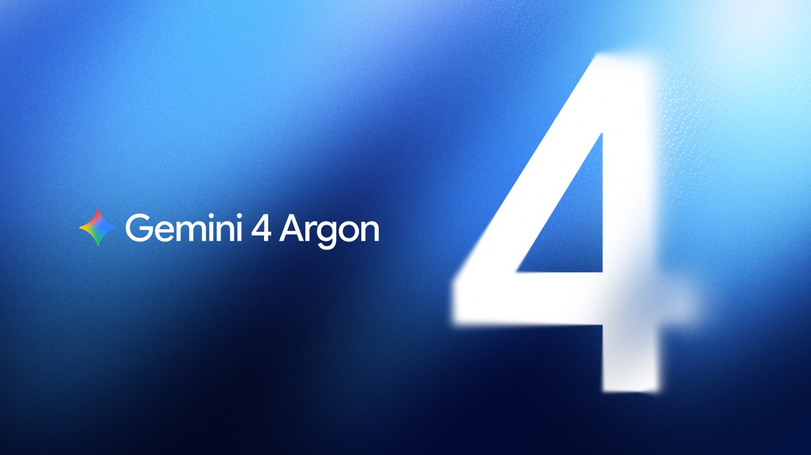
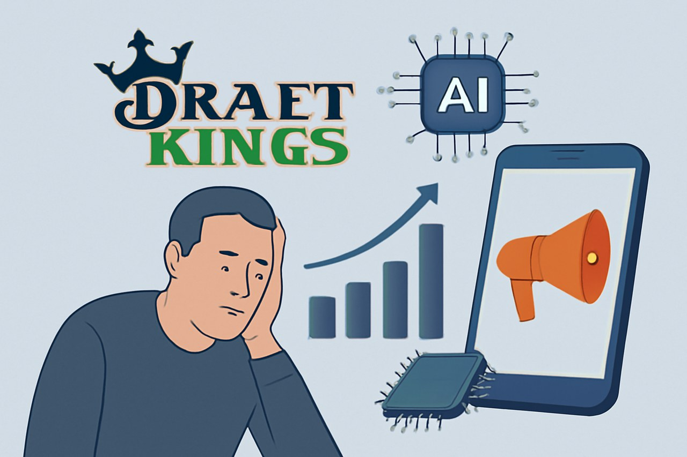
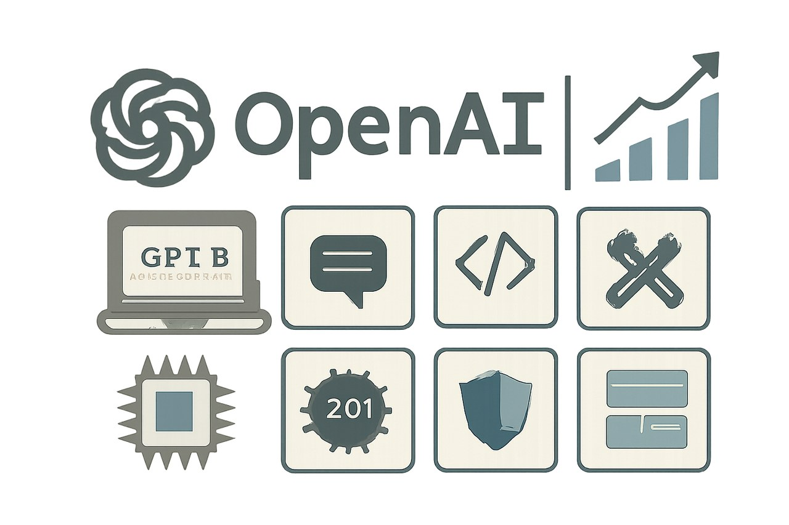
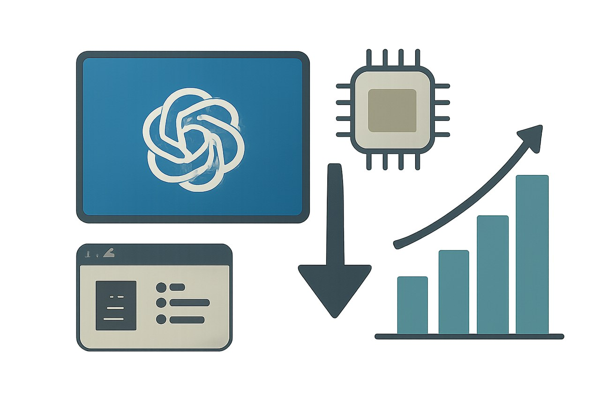
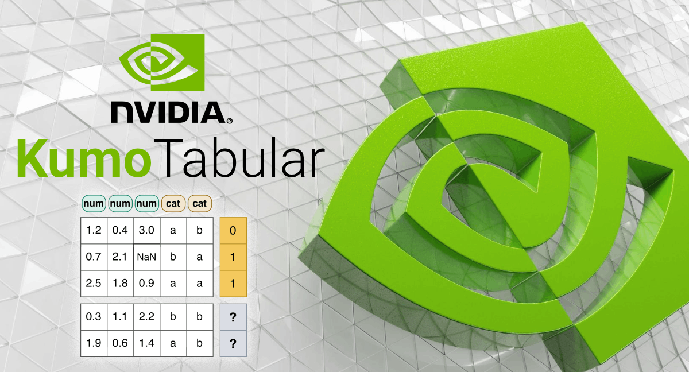
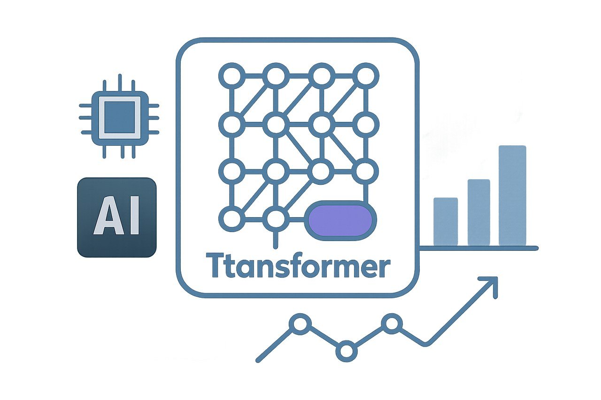
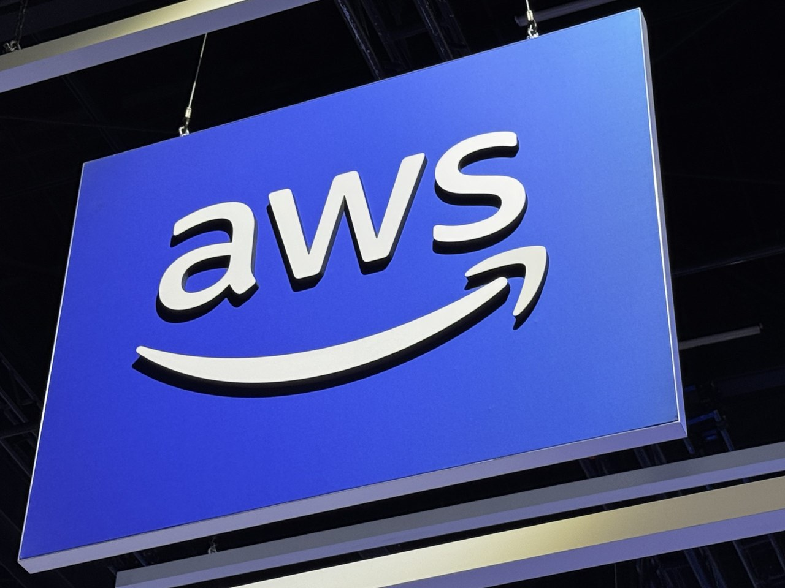

01 프론티어 & 사업 동향 이번 호 머리기사
Anthropic, 정부기관용 Claude 정식 전환
Anthropic이 Claude for Government를 연방·주 정부 기관에 정식 제공한다. FedRAMP High 환경에서 상용 고객과 비슷한 기능을 쓰게 하되, 지출 상한과 감사 로그, 부서별 통제를 함께 묶었다.
Weekly AI Brief
이번 주 흐름은 두 갈래였습니다. 먼저 모델 업체들은 더 긴 문맥과 더 낮은 가격, 공공부문용 배포처럼 상용화 범위를 넓혔습니다. 구글의 100만 토큰급 예고와 OpenAI의 가격 조정, Anthropic의 정부기관용 전환이 같은 주에 나오며, 성능 경쟁보다 실제 배포 조건을 넓히는 쪽이 앞섰습니다. 반면 현장 적용 단계에서는 광고 타기팅 논란, 로컬 결정 모델, 기업용 에이전트 제어판처럼 보안과 통제, 운영 책임을 붙인 도구가 눈에 띄었습니다. 이번 주에는 모델이 얼마나 똑똑한지보다, 어디에 두고 누가 통제하며 어떤 비용으로 쓰는지가 더 크게 바뀌었는지 살펴봐야 합니다.

Editor's Pick
01 프론티어 & 사업 동향 이번 호 머리기사
Anthropic이 Claude for Government를 연방·주 정부 기관에 정식 제공한다. FedRAMP High 환경에서 상용 고객과 비슷한 기능을 쓰게 하되, 지출 상한과 감사 로그, 부서별 통제를 함께 묶었다.
02 프론티어 & 사업 동향
“Gemini 4 Argon은 복잡한 장기 업무를 오래 이어 가도록 만든 모델이다.”
03 프론티어 & 사업 동향
“DraftKings는 베팅 기록으로 손실 가능성이 큰 이용자를 찾아 다시 광고를 보낸다.”
대형 연구소의 모델 공개·프리뷰, 규제/정책, 파트너십 등 산업이 움직인 사건입니다.
01 Claude Blog 게시일 2026.09.30
Anthropic이 Claude for Government를 연방·주 정부 기관에 정식 제공한다.
“Anthropic은 Claude for Government를 연방·주 정부 기관에 정식 제공한다.”
02 Google 게시일 2026.09.30
구글이 코딩·금융 조사·법률 문서·보안 대응에 맞춘 Gemini 4 Argon을 공개했다.
“Gemini 4 Argon은 복잡한 장기 업무를 오래 이어 가도록 만든 모델이다.”

0203 eff.org 게시일 2026.09.29
온라인 스포츠 베팅 업체 DraftKings가 AI로 손실 가능성이 큰 고객을 골라 맞춤 광고를 보낸다는 비판이 나왔다.
“DraftKings는 베팅 기록으로 손실 가능성이 큰 이용자를 찾아 다시 광고를 보낸다.”

0304 OpenAI 게시일 2026.09.29
OpenAI가 DevDay 2026에서 20건이 넘는 발표를 묶어 공개했다.
“OpenAI는 ChatGPT를 사람과 에이전트가 함께 일하는 공용 작업면으로 넓히고, 개발자가 12억 주간 이용자에게 네이티브 경험을 직접 배포할 길을 열었다.”

0405 OpenAI 게시일 2026.09.29
OpenAI가 GPT-6.
“GPT-6.1 Sol은 코딩과 문서 이해, 업무 자동화 평가에서 Astra에 가까운 성능을 더 낮은 비용으로 노린 모델이다.”

05오픈웨이트 모델과 GitHub/Hugging Face 생태계에서 주목할 프로젝트입니다.
06 Hugging Face 게시일 2026.09.29
NVIDIA가 표 형식 데이터를 위한 오픈 파운데이션 모델 Kumo Tabular를 공개했다.
“Kumo Tabular는 라벨이 있는 표만 넣으면 새 행의 값을 한 번에 예측한다.”

06논문·벤치마크·기법 연구 중 실무 관점에서 볼 만한 결과입니다.
07 arXiv 게시일 2026.09.29
새 연구는 사전학습된 Transformer가 문맥 안 참조를 예상보다 짧게만 따라간다고 보고했다.
“Qwen3-8B는 24줄 체인 과제에서 정답률이 15.5%에서 99%로 올랐다.”

0708 arXiv 게시일 2026.09.30
새 연구는 AI가 생성한 과학 논문을 문장 단위가 아니라 구조와 논리 연결로 평가했다.
“각 부분은 그럴듯해 보여도, 부분을 잇는 과학적 추론이 무너질 수 있다.”
개발 도구, 인프라, 보안 이슈 등 바로 써먹거나 조심해야 할 소식입니다.
09 The New Stack 게시일 2026.10.01
AWS가 에이전트의 행동을 실행 전에 점검하는 소형 결정 모델 Strands Decider 2B를 내놨다.
“Strands Decider 2B는 에이전트가 행동하기 전, 로컬에서 빠르게 한 번 더 점검하는 작은 결정 모델이다.”

0910 The New Stack 게시일 2026.09.30
OpenClaw가 기업용 에이전트 관리 플랫폼 OpenClaw Enterprise를 공개 개발 형태로 내놨다.
“OpenClaw Enterprise는 여러 팀과 사용자가 같은 인프라를 쓰는 환경에서, 에이전트를 중앙에서 배포하고 격리하도록 설계됐다.”